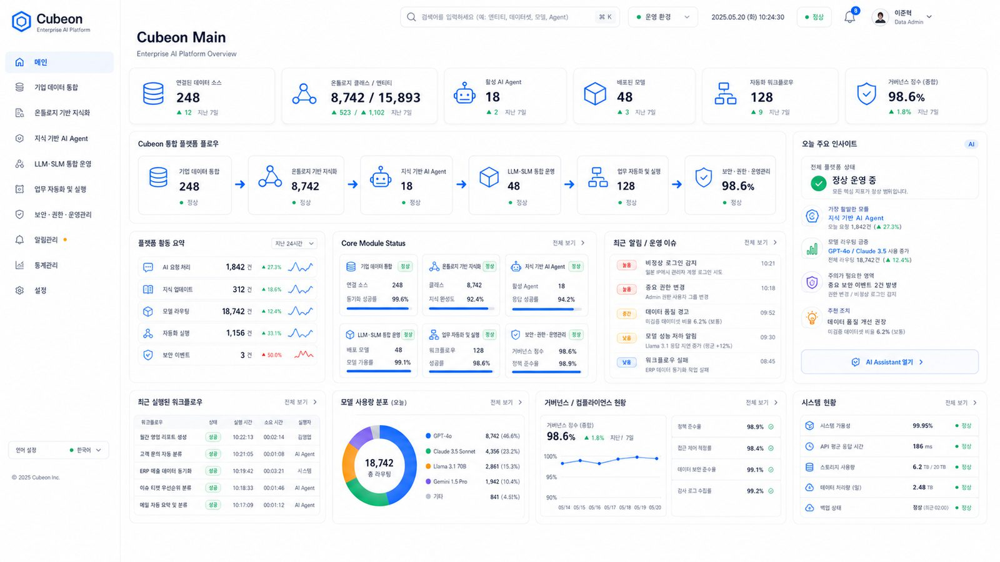
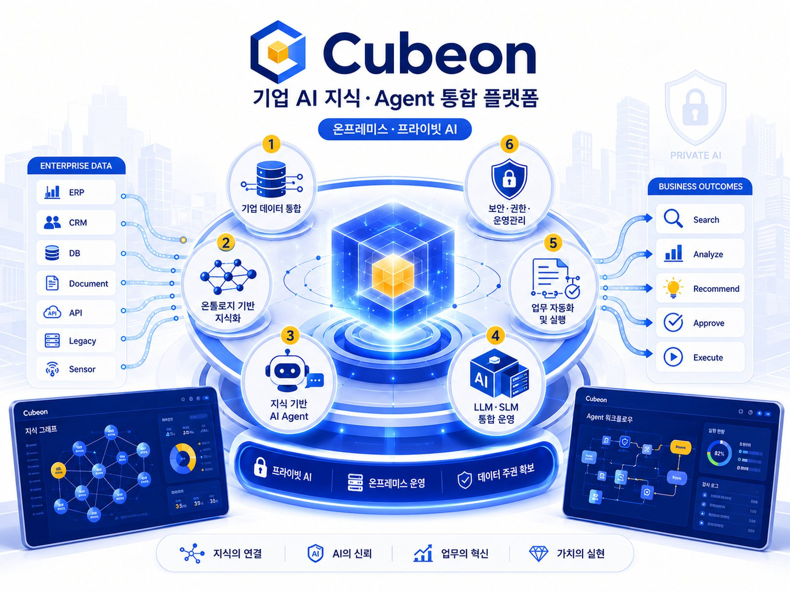
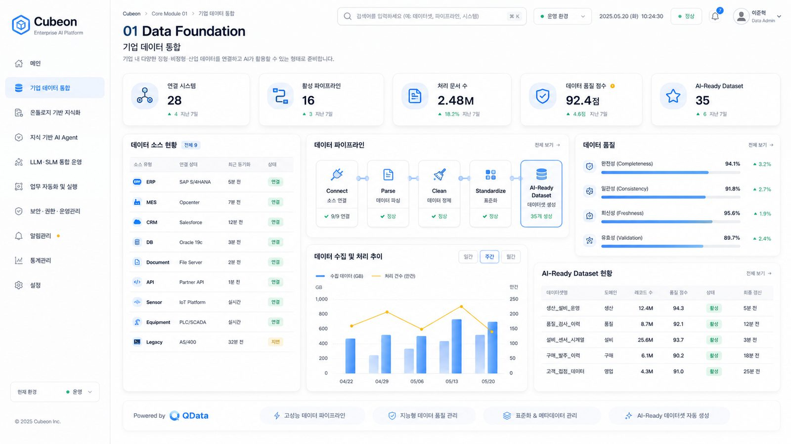
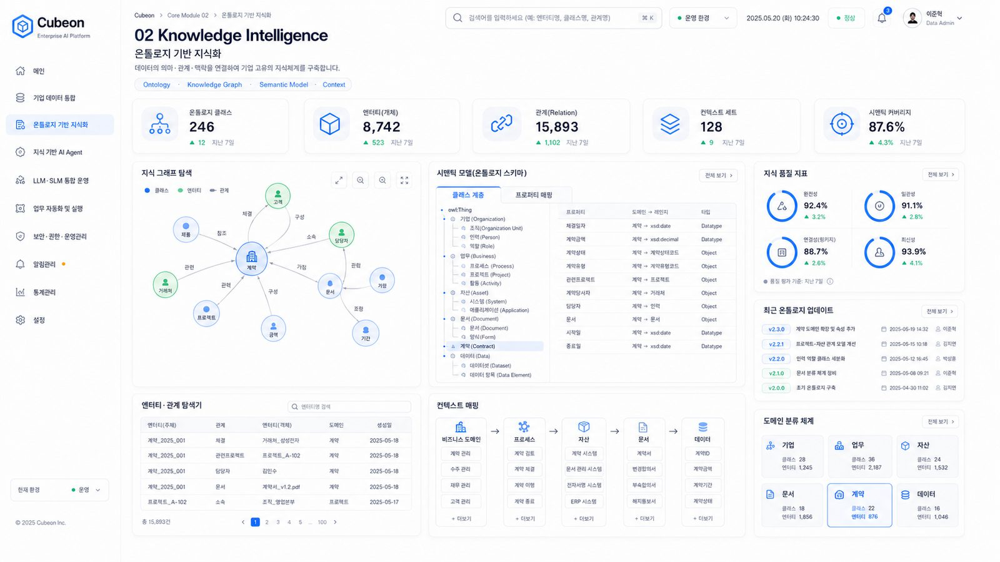
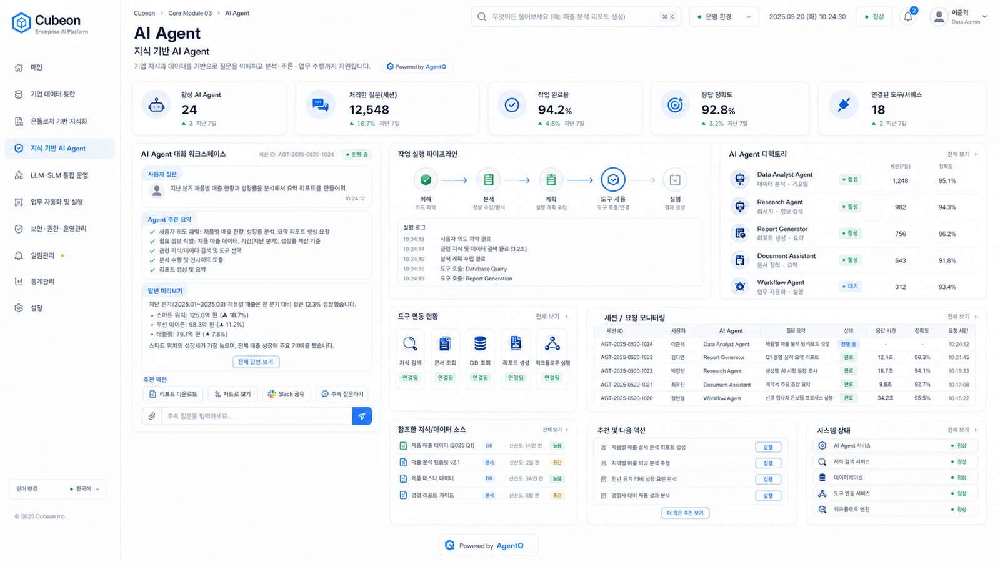
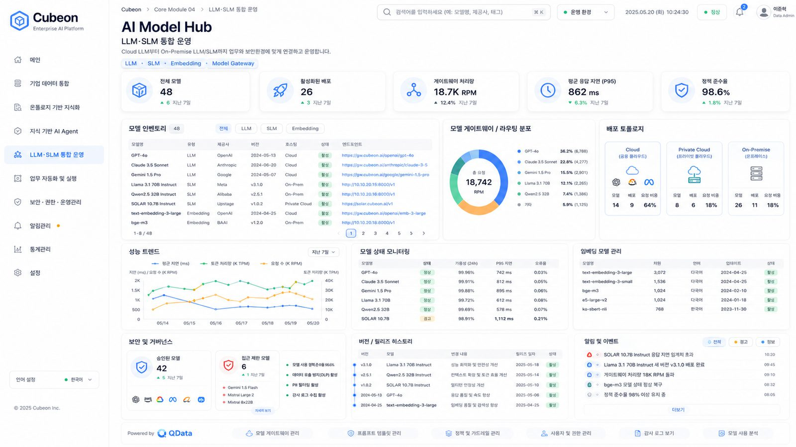
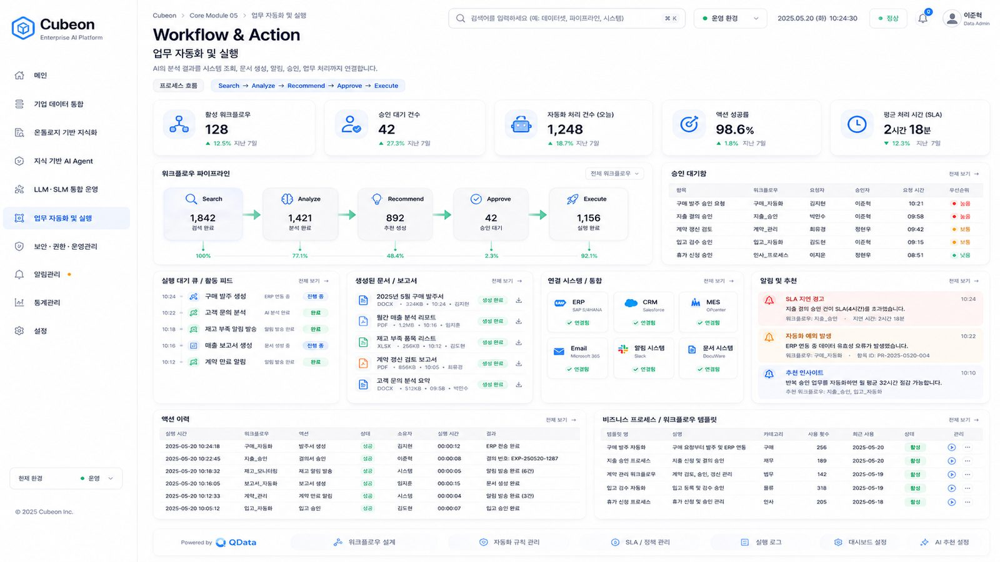
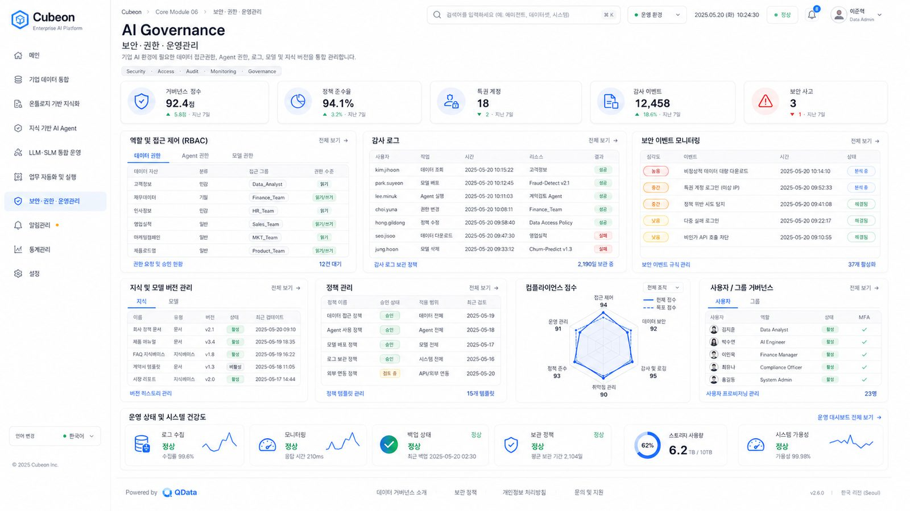

Connect
데이터 연결
설비 제어기(PLC)·
- 엣지 수집·
전송 복구 네트워크 단절 시 데이터를 임시 저장하고 연결 복구 후 재전송 - 안전한 연결 암호화·
기기 인증· 역할별 접근 권한으로 시스템 간 데이터 이동 보호
산업과 비즈니스의 데이터·

Cubeon은 데이터 연결부터 AI 모델·

공통 데이터 기반 위에서 지식과 AI 서비스를 운영하고, 조직의 승인 절차에 맞춰 안전하게 실행합니다.
기업 내 다양한 정형·

데이터의 의미·

기업 지식과 데이터를 기반으로 질문을 이해하고 분석·

Cloud LLM부터 On-Premise LLM/SLM까지 업무와 보안환경에 맞게 연결하고 운영합니다.

AI의 분석 결과를 시스템 조회, 문서 생성, 알림, 승인, 업무 처리까지 연결합니다.

기업 AI 환경에 필요한 데이터 접근권한, Agent 권한, 로그, 모델 및 지식 버전을 통합 관리합니다.

산업과 비즈니스에 공통으로 필요한 기능을 나눠 구성해 필요한 모듈과 분야 기능부터 단계적으로 확장합니다.
설비 제어기(PLC)·
실시간 데이터와 정기 수집 데이터를 안정적으로 저장·
공통 데이터 형식과 용어·
AI 모델의 학습·
업무 질문에 답하고 문서를 분석하며 업무를 수행하는 AI 에이전트를 실행합니다.
여러 AI 에이전트가 정해진 순서와 역할에 따라 하나의 업무를 완성하도록 조정합니다.
탐지·
자연어 질의와 업무 지원에 사용할 AI를 상용 대규모 언어모델(LLM)과 사내 소형 언어모델(sLLM) 중에서 선택합니다.
데이터·
Connect부터 Console까지 8개 모듈을 조합해 데이터 연결, AI 운영, 승인과 실행의 공통 기준을 만듭니다.
설비 이상 감지·
영상·
조직의 문서와 데이터를 근거로 질문에 답하고 분석 결과를 설명하며 필요한 후속 업무를 지원합니다.
모든 업무를 한 번에 자동화하지 않고 감지와 알림부터 시작해 담당자 승인, 제한된 자동 실행 순으로 적용 범위를 넓힙니다.
장비 가까이에서 처리하는 엣지부터 사내 구축형, 엣지와 사내·
장비 가까이에서 수집·
조직 내부 서버에 구축해 중요 데이터와 AI 모델을 보안 경계 안에서 운영
엣지·
분산된 데이터와 AI 서비스를 하나의 운영 기준으로 연결하고 실행까지 관리하려는 조직에 적합합니다.
팀마다 다른 방식으로 데이터와 모델을 운영해 공통 기준과 재사용 구조가 필요한 환경
분석 결과는 있지만 담당자 승인·
안전·
엣지·